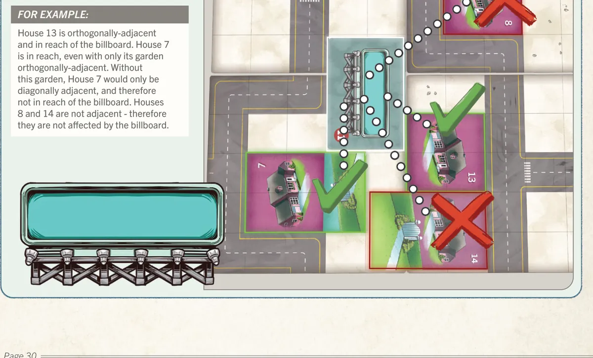
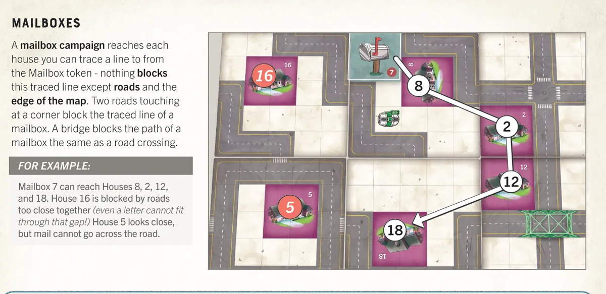
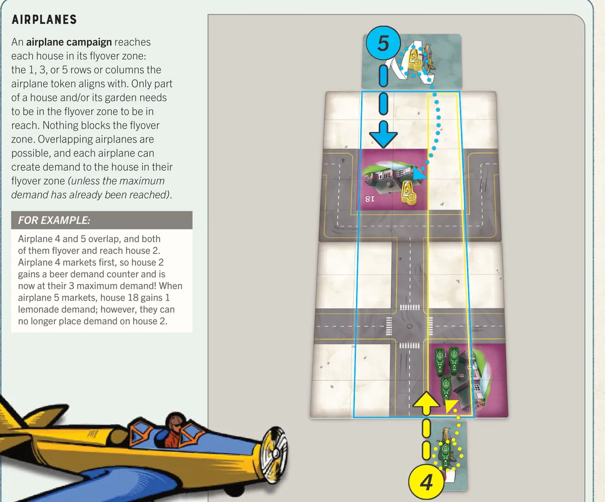
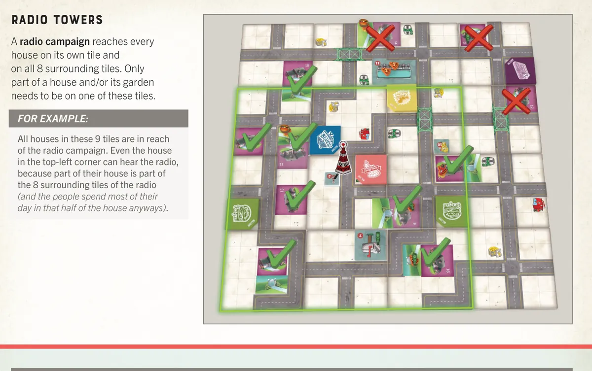

Campaign Types
Four ways to create demand. Each reaches houses differently.
📢 Billboard
Reach: Houses on orthogonally adjacent tiles (up, down, left, right — not diagonal).
Available from: Marketing Trainee and above.
Best for: Targeted local advertising. Simple and reliable.

📬 Mailbox
Reach: Line-of-sight in all 4 orthogonal directions until blocked by a road or map edge.
Available from: Campaign Manager and above.
Best for: Long-range targeting. But watch for roads blocking the line!

✈️ Airplane
Reach: Flyover zone — 1, 3, or 5 rows wide depending on Marketeer level.
Available from: Brand Manager and above.
Best for: Covering a wide strip of the board. Great for mass advertising.

📻 Radio
Reach: Same tile plus all 8 surrounding tiles (3×3 area, including diagonals).
Available from: Brand Director only.
Best for: Maximum local coverage. The most powerful campaign type.

Demand Cap
| House Type | Max Demand Counters |
|---|---|
| Regular house | 3 |
| House with garden | 5 |
Extra marketing on a maxed-out house does nothing. You cannot remove existing demand to make room.
Campaign Numbers Matter
Campaigns resolve in numerical order. Lower-numbered campaigns go first and are more likely to successfully place demand. Getting a low number is a strategic advantage.